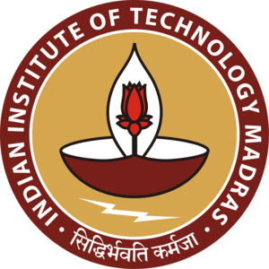
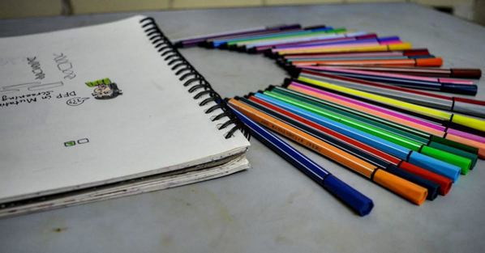

IIT-M

Place: Chennai
Study: InterLab
Teams: REC-Chennai and IIT-Madras
During the InterLab study, our team faced a few issues in transformation. Considering that we operated under both time and resource constraints, we looked for collaborations with other teams that could help us with a successful completion and compilation of the InterLab results. We collaborated with another team from the city – IIT Madras as per the facilitations provided on the page 9 of InterLab Study Protocol. We requested to share transformed devices with IIT Madras and further used them to carry out the cell measurement.
We performed the calibration experiments followed by CFU measurements.
We are thankful for the collaborative gesture of IIT-Madras in helping us carry out our InterLab study successfully.
NYU Abu Dhabi
Science Sketch

We took cognizance of the fact that a technical project on mutagenesis and the underlying principles of synthetic biology may not be unambiguous to the general public. Hence, when IGEM NYU Abu Dhabi forwarded emails looking for science sketches that could simplify the presentation of the underlying principle of the project, we were more than happy to collaborate with them.
The science sketch is a diagrammatic representation of the project over a series of frames. Our science sketch started by addressing the most basic question of what mutagenesis is. Furthermore, we explained what mutants are with relatable examples and explained the ideas of restriction digestion and ligation using depictions of scissors and glue respectively in an attempt to illustrate their synonymous functions. The sketch also explained the conventional mutagenesis system of Palter and the drawbacks associated with it before introducing our system. It involved an illustration of our screening procedure and a relevant conclusion.
Through the sketching and filming processes, we realised what an important tool visualisation can be and the importance of public understanding of even complex scientific discoveries. We used the simplified explanation of our project for explaining it to many others. It also served as an inspiration for the Spot the mutations game we conducted as a part of our human practices campaign in an attempt to explain the concept of mutations and mutagenesis to tiny tots. We’re grateful to have been a part of the initiative.
THE VIRTUAL CONFERENCE
The teams from NYU Abu Dhabi, REC-Chennai, VIT, Macquarie University, Hong Kong University of Science and Technology and Saint Joseph were a part of the conference call organised by NYU on the fifteenth of September. Once all the teams had joined and checked their connectivity, the rules of the conference call were stated by NYU. The teams were to elaborate on their projects while simultaneously playing their presentations at the end of which each team was asked questions by the others.
Team Macquarie explained their project that involved producing chlorophyll induced vesicles in a modified E. coli. As they explained their project and the uses of a vesicle in a cell, we understood the potential impact that their project could have in synthetic biology. VIT Vellore introduced to us their proposal that aimed to bring a reduction in ocean acidification. NYU Abu Dhabi explained to us their concept of a chip that could detect food borne pathogens and the imperative need for food safety. The high school students from Saint Joseph were working to tackle a problem in the fishery industry of Turkey by introducing a bacteriophage aimed at the lysis of pathogens in fish. Hong Kong University of Science and Technology has been working on a revolutionary technique to produce electricity from degraded plastic. We explained our project and the need for an alternate system from the conventional technique used. We were asked about out HP practises as we were working on a highly technical project.
It was a wonderful opportunity to be a part of the conference call and the projects that were explained to us showed scientific brilliance. We thank NYU-Abu Dhabi for this wonderful opportunity.
All India iGEM Meet
Date: 27th -29th of July 2018
Place: IISc Bangalore
As an initiative to unify all the Indian teams, Indian Institute of Science, Bangalore organized the All-India iGEM meet. Three members represented our team in the three days of scientific correspondence that took place among the ten Indian teams. The first day began with an icebreaker session where our teams got to know one another and then progressed to the presentation session. Each presentation was followed by an extensive Q&A session wherein suggestions of possible improvements were given. A productive day ended with a much needed team karaoke session. We also got to know the other teams as the sessions progressed into fun games.
On the second day, our presentation consisted of a comparative analysis of the current system used for the detection of mutagenesis i.e. pALTER and our system, FluoroScreen. After our presentation, we were asked about how our project would deal with false positive results to which our team member was able to provide a clearer insight into what we aim to achieve. The occurrence of such false positive results is due to the differential binding of primers. We were able to troubleshoot our project due to timely inputs from the audience. We received a general positive feedback for our project.
The second day concluded with the remainder of the presentations, a guest lecture and progressed to a team dinner. We were also given a campus tour of Indian Institute of Sciences, Banglore. At the end of the meet, not only did we have an exposure to the projects of the other Indian teams, we also have a fair share of insights into the functioning of our project as well. The interdisciplinary discussions facilitated by the meet turned the experience wholesome. We are happy to have been a part of the initiative.
Beach Clean Up
Place: Marina Beach, Chennai
Date: 17th June 2018
With: iGEM – VIT and iGEM IIT-M
As an initiative to unify all the Indian teams, Indian Institute of Science, Bangalore organized the All-India iGEM meet. Three members represented our team in the three days of scientific correspondence that took place among the ten Indian teams. The first day began with an icebreaker session where our teams got to know one another and then progressed to the presentation session. Each presentation was followed by an extensive Q&A session wherein suggestions of possible improvements were given. A productive day ended with a much needed team karaoke session. We also got to know the other teams as the sessions progressed into fun games.
On the second day, our presentation consisted of a comparative analysis of the current system used for the detection of mutagenesis i.e. pALTER and our system, FluoroScreen. After our presentation, we were asked about how our project would deal with false positive results to which our team member was able to provide a clearer insight into what we aim to achieve. The occurrence of such false positive results is due to the differential binding of primers. We were able to troubleshoot our project due to timely inputs from the audience. We received a general positive feedback for our project.
The second day concluded with the remainder of the presentations, a guest lecture and progressed to a team dinner. We were also given a campus tour of Indian Institute of Sciences, Banglore. At the end of the meet, not only did we have an exposure to the projects of the other Indian teams, we also have a fair share of insights into the functioning of our project as well. The interdisciplinary discussions facilitated by the meet turned the experience wholesome. We are happy to have been a part of the initiative.